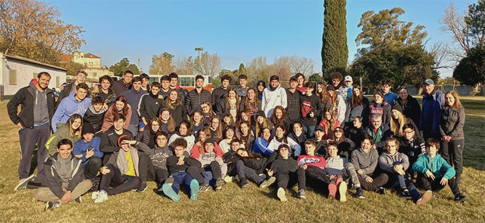

Retiro de quinto año
Los días 1° y 2 de junio vivimos con chicas y chicos de quinto año la experiencia que llamamos
"Recreo", en la que fusionamos el retiro espiritual con el campamento.
Tratamos de mirar el pasado, descubrir el presente para proyectar el futuro, buscando el momento
y el lugar para un encuentro personal y con los demás.
Compartimos juegos y reflexiones. Intercambiamos sentimientos generando un espacio de encuentro
entre compañeros, descubriendo y revalorizando al otro en la búsqueda del camino que deseamos seguir.